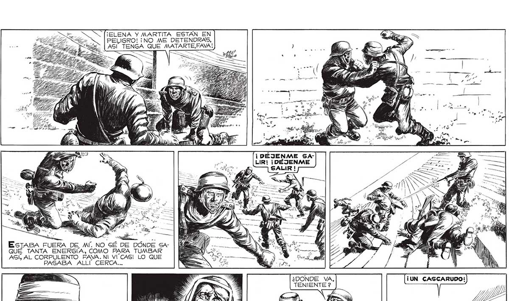
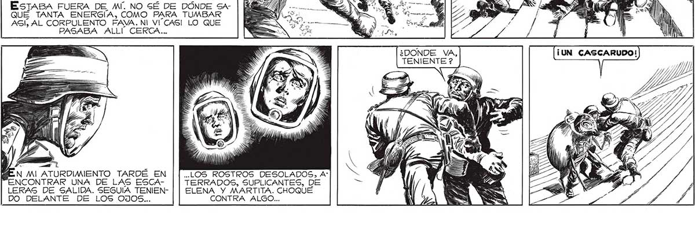

¡ELENA Y MARTITA ESTAN EN PELIGRO! ¡NO ME DETENDRAS, ASI 128 SW ZE e A ¡DÉJENAME SALIRI! ¡DÉJENME SALIR ! a ESTABA FUERA DE MÍ. NO SÉ DE DÓNDE SAQUÉ TANTA ENERGÍA, COMO PARA TUMBAR AGÍ, AL CORPULENTO FAVA. NI VUCASI LO QUE PASABA ALLÍ CERCA... a A ¿DONDE VA, TENIENTE ? .LOS ROSTROS DESOLADOS, A" ATURDIMIENTO TARDÉ EN ] TERRADOS, SUPLICANTES, DE ELENA Y MARTITA. CHOQUÉ LERAS DE SALIDA. SEGUIA TENIENDO DELANTE DE LOS UJOS:. CONTRA ALGO... A NM "ENCONTRAR UNA DE LAS ESCA

